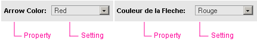
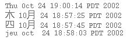
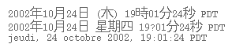

Sun Web Application Guidelines - Version 4.1
Sun Web Application Guidelines - Version 4.1
|
|
|
How To Use These Guidelines - An Introduction
Appendices > Appendix H
In software development, internationalization is the process of writing an application that is suitable for the global marketplace, taking into account variations in regions, languages, and cultures. Internationalization usually requires the separation of component text from code to ease the process of translation. A related term, localization, refers to the process of customizing an application for a particular language or region. Localization usually involves translation and often requires changes to colors, fonts, keyboard usage, number formats, and date and time formats. In this appendix, the term globalization refers to the combined tasks of internationalization (that is, i18n) and localization (that is, l10n).
An application that has not been effectively globalized is not only harder for international users to use, but might also be perceived as insensitive to their needs. In recognition of the importance of globalization, Sun mandates product internationalization and localization on its products. Key elements of this are:
Offering a comprehensive set of requirements for dealing with global differences is impossible. Therefore, the goal of this appendix is to provide a set of guidelines for application developers to help them become more aware of potential trouble areas. These guidelines cover layout and orientation, localized elements, and data formats. Also included is a section concerning testing and verification.
Additional information can be found in 1.4 Resources for Application Designers
When laying out your application, keep in mind that the application will be affected by localization. You must consider a number of factors so that the appearance and functionality of your application can adapt properly to the end user's locale. Factors include reading order, word order, sort order, font considerations and data entry fields.

Keep in mind that word order varies among languages, as shown in the following example. A drop-down menu that appears in the middle of an English sentence does not translate properly in French, where the adjective should come after the noun. (The correct French sentence is "Utilisez une Flèche Rouge.")
The following example corrects the problem by using a label before the drop-down menu. This format works well in both English and French.

More details are provided in H-4.2 Data Presentation.
Sorting of objects is locale sensitive. For example, in many European languages, sorting is commonly based on alphabetical order (which also varies from one language to another). In other languages, sorting might be based on phonetics, character radicals, the number of character strokes, and so on.
 You must use the collation tools provided by your toolkit to ensure that sorting is performed properly for the locale in which your application will operate.
You must use the collation tools provided by your toolkit to ensure that sorting is performed properly for the locale in which your application will operate.
 You
can use the collator classes provided in the Java™ 2 SDK to enable the sorting of strings by locale. The Collator class
in the java.text package enables locale-sensitive string sorting.
You
can use the collator classes provided in the Java™ 2 SDK to enable the sorting of strings by locale. The Collator class
in the java.text package enables locale-sensitive string sorting.
Fonts are closely coupled with the locale in which the application operates. Although there are fonts that support many languages, often, the font must be localized for proper appearance of the application in different locales.
 You should always ensure that any fonts that you specify in your application can be localized.
You should always ensure that any fonts that you specify in your application can be localized.
 Be sure to provide user control over font size in your application.
Be sure to provide user control over font size in your application.
The guidelines above allow the application to be easily tested with a much larger font, which can be a measure of how well it will adapt to different locales. Many languages, such as Japanese, German, and Dutch often require substantially more space (in the same font size) to express the same idea as in English. Other languages, such as Chinese, might require substantially less space than English to express the same idea. The size of fonts is also an important consideration for users with visual limitations.
Languages across the globe use many different alphabets. Some alphabets require more horizontal space, more vertical space, or both, than others. Languages using an alphabet such as Latin, Cyrillic, Hebrew and German, tend to expand horizontally. For instance, the word "Cancel" is written as "Abbrechen"' in German. The German word is one and a half times the length of the English word, and the length can sometimes double. Many Asian languages tend to expand vertically. The characters used in these languages are often simply taller than the letters of the English alphabet and may require a much larger point size for legibility than the characters of the English alphabet. The characters used in these languages are represented by different charsets, or character encoding schemes. Applications must be aware of the charset that is in use, and be able to display text and accept user entries using any of the supported charsets. Since the height and length of text varies across the globe, these differences must be accounted for when internationalizing your application.
The best way to handle font changes is to specify them in cascading style sheets. This way, localizers can change the fonts in one place to affect the entire application.
Keep in mind that as text expands, page layout can be affected. Try to design your page such that text expansion does not completely alter the page layout. (See H-2 Layout and Orientation for more information.)
When considering how to handle text for internationalization, one of the most important tasks is to isolate the text so that it can be easily identified and localized. To do this, place text in resource bundles. Graphics files can also be placed in resource bundles (see section H-3.2.1 Icons and Images).
Data entry fields in your application should anticipate locale-specific entries. Expressing a certain idea can require a greater or lesser number of characters based on the end user's language. In addition, fields for data such as zip code, social security number, and so on will require different sizes and formats in different locales and cultures. Be sure to leave enough space to accommodate locale-specific entries. Consult with the localization teams about any data entry fields that you think might be culturally or linguistically sensitive. For more details, see H-4 Data Formats.
Elements that need to be localized include:
These elements are discussed in the following sections.
 Use
resource bundles to make your text easier to localize.
Use
resource bundles to make your text easier to localize.
The following list identifies the kinds of text in your interface that must be localizable:
User interface elements, themselves, must also account for internationalization. This topic is covered in more detail in H-4.1 Variable Elements and Entry Fields.
Note that a product name displayed in the masthead is not a textual element. It is an image displaying text and it is not translated (for more details, see Chapter 4, Mastheads).
You can negatively or positively affect the internationalization of the text in your interface by the choice of words and phrases used in your interface. Following are some guidelines to help you create text that is appropriate for localizing.
 Use standard typographical conventions for titles and sentences within your application. When the text is localized, the translators can adopt the standards to use in each target locale.
Use standard typographical conventions for titles and sentences within your application. When the text is localized, the translators can adopt the standards to use in each target locale.
 Do not use words or phrases that have culturally-defined meanings. Most jargon, slang, marketing terms, and humor do not translate well.
Do not use words or phrases that have culturally-defined meanings. Most jargon, slang, marketing terms, and humor do not translate well.
 Check with translators before using acronyms and abbreviations in the user interface. These items are often not translated and must, therefore, be internationally acceptable or replaced with more appropriate terms.
Check with translators before using acronyms and abbreviations in the user interface. These items are often not translated and must, therefore, be internationally acceptable or replaced with more appropriate terms.
Icons and images must be considered carefully. Images that make sense in one locale might not carry the same meaning, or might even be offensive, in another locale. For example, since the shape and size of a mailbox varies across locales, it would be difficult to arrive at a single image that represents a mailbox for users in different locales. Although the concept of "mailbox" might make sense to represent an email application, getting this meaning across graphically might not be easy.
It is particularly difficult to depict everyday objects, holidays, and seasons in a universally understood graphic image.
Creating multiple versions of localized graphics is costly. An example of an image that works well globally is an image of airplane that is used to represent an airplane. This image works because the concept of an airplane is shared across locales. Additionally, the image in this case is being used to represent its literal meaning, not a culturally-defined meaning.
When this strategy is not possible, try to get input from international sources when creating your graphics. If an image that works across your target locales cannot be found, plan to define locale-specific graphics.
 Use globally understood graphics, whenever possible.
Use globally understood graphics, whenever possible.
Images with text almost always have to be localized. When text is used in graphics, considerations for text expansion and font-size changes should be made in the image. However, this could potentially detract from the image. Additionally, localizers should receive a version of the graphic separated from the text. Users of Adobe™ Photoshop may accommodate this recommendation through the use of layers, which takes more time and effort, and increases cost.
Only text that does not need to be translated, such as the product name displayed in the masthead, should be included in an image.
 Do not include text within graphic images or icons.
Do not include text within graphic images or icons.
 Avoid using graphics that might be offensive in some locales, including:
Avoid using graphics that might be offensive in some locales, including:
 Put graphics in resource bundles so that translators can find and change them easily, if necessary.
Put graphics in resource bundles so that translators can find and change them easily, if necessary.
 Make sure that the meaning you associate with an icon is as literal as possible. Avoid culturally-defined meanings.
Make sure that the meaning you associate with an icon is as literal as possible. Avoid culturally-defined meanings.
 Do not use a single icon to represent multiple meanings within your application.
Do not use a single icon to represent multiple meanings within your application.
 Show
proposed icons and images to sales people and users in target locales to get
feedback from them.
Show
proposed icons and images to sales people and users in target locales to get
feedback from them.
Note that a product name displayed in the masthead is not a textual element. It is an image displaying text and it is not translated (for more details, see Chapter 4, Mastheads).
Color has different meanings in different cultures. For example, red is considered a celebratory color in some countries, while in others it is associated with death. As another example, in some cultures, white is associated with death. In the United States, it is associated with purity. Because of these differences, user interface colors should be chosen carefully and, preferably, by visual designers who have been educated in the meaning of colors in various cultures.
It is also important to define and adhere to a consistent color palette within an application, set of applications, or entire product line. Doing so enables users to grow accustomed to the way color is used within an application or set of applications, and attribute the appropriate meaning to the use of the color. For example, if red is defined to mean error, it should be used as such consistently throughout the application or set of applications.
 Use the color palette defined in 2.1 Color Palette for your primary color palette.
Use the color palette defined in 2.1 Color Palette for your primary color palette.
A sound can be meaningful in some countries, but not in others. For example, a game show buzzer sound for an incorrect answer is well known to people in the United States, but it can simply be a noise with no meaning to people in other countries.
Additionally, sounds that are generated when a mistake is made can be embarrassing if other people are nearby.
 If sounds are included in your user interface, provide a variety of options for the sound, allowing users to select the desired sound or to turn sound off altogether.
If sounds are included in your user interface, provide a variety of options for the sound, allowing users to select the desired sound or to turn sound off altogether.
When localizing an application, present the information to the user in a format that is meaningful to them. In the case of certain data formats such as dates and monetary currency, the application developer has to plan for these differences.
 Applications must:
Applications must:
Fixed elements are not the only portions of the user interface that change order or expand with use in other languages. User entry areas also need more space for the data they receive. Making the elements flexible for localization is not enough. English products are often sold all over the world, and the user interface included with an English product must accommodate entry data from all over the world. In other words, the user interface can be in English, but the fields need to be locale-specific in format and order. In addition, application developers must consider the implications of a universal data entry field structure. For example, if a product allows the user to enter a date in a short format, how should the entry area appear?
The problem with forcing a date format is that it is not universal. Even calendars are not universal. As a shortcut, it is not uncommon for some applications to limit their capacity to the Gregorian calendar. But the mm/dd/yy format so common in the United States is not used anywhere else, and is very confusing.
 Allow a user in a known locale to enter a date format commonly used in that locale.
Allow a user in a known locale to enter a date format commonly used in that locale.
If there is no way to know the locale, then the only acceptable universal date format is yyyy-mm-dd. The separator may be changed to a dot (.), or possibly a slash (/), but the rest of the fields must be in the specified order.
 Another possible solution to the format issue is to provide users with a choice of formats, for example, in a preferences area. This way, you can display the chosen format next to the field, and know exactly how to parse the date format entered by the user.
Another possible solution to the format issue is to provide users with a choice of formats, for example, in a preferences area. This way, you can display the chosen format next to the field, and know exactly how to parse the date format entered by the user.
 Determine data field lengths by function, whenever possible, rather than hard-coding a single, assumed value.
Determine data field lengths by function, whenever possible, rather than hard-coding a single, assumed value.
Strings and currency values expand when localized, and data in other languages may require more space. Imagine the price of something expressed in Turkish Lira (the Turkish currency till 2005) which was over TRL 1,500,000/USD 1.00.
 Use and store messages in entire phrases; do not build them from pieces.
Use and store messages in entire phrases; do not build them from pieces.
This guideline includes user interface phrases formed by drop-down menu choices or numeric values in combination with fixed text. Word order and grammar change drastically from language to language. You may use placeholders for information that comes from the system (for example, file names, available disk space) as long as they can be reordered. If you do so, add comments in the resource file as to what the placeholders represent.
In addition, sentence order changes with different languages. Not only does the order change, but the phrase breaks change as well. So, simply allowing reordering might not be enough for a translation to look correct. For example, it is tempting to construct a calendar entry edit screen as follows:
However, most languages would have to rearrange the fields, and some (in this case, the am/pm) are superfluous and need to be removed. An additional example is provided in H-2.1 Word Order.
 Do not include a particular sentence order as part of the design.
Do not include a particular sentence order as part of the design.
Numbers are commonly displayed using the Arabic numeral system; that is, digits 0-9. However, the convention to group the digits of a number varies from one culture to another. For example, in the U.S., a comma is used to separate digits into groups of three, for example, 10,000,000, whereas in France, the separator is a dot. In Japan, digits are separated into groups of four.
 Make sure that your user interface allows numbers to be grouped as appropriate when localized.
Make sure that your user interface allows numbers to be grouped as appropriate when localized.
 Make sure entry areas are large enough to handle longer text entries.
Make sure entry areas are large enough to handle longer text entries.
The convention for displaying monetary value varies from one country to another; that is, the currency symbol and the position of the currency symbol. For example, to represent 5 U.S. dollars and 45 cents, you place the dollar symbol before the value--$5.45. In some locales, the currency symbol can appear after the value or even between the integral and fractional designations; for example, Portuguese 5$45 represents 5 escudo and 45 centavos.
Units of measurement can also vary from one locale to another. Standard metric units for length, volume, and weight include meters, liters, and grams. Standard imperial units include feet, ounces, and pounds. However, other region-specific measurements exist.
Clothing sizes change from region to region. For example, a U.S. ladies' dress size 10 is a U. K. size 14, and a U.S. ladies' shoe size 8 is a European size 39. Paper sizes change, packaged quantities change, temperature scales change. Anytime a measurement unit is involved, it is likely to vary in different locales.
Other field types that should be considered very carefully are names, addresses, and telephone numbers. Data formats are usually locale-specific, culture-specific, or both. Once again, English products are sold all over the world, so just making the arrangement localizable is not enough.
 If the interface must be customized for the product to function properly, then create several locale profiles that can be loaded based on the user's locale. Or, less optimally, make it easily user customizable, and inform the customer that they are expected to customize the product for the locale.
If the interface must be customized for the product to function properly, then create several locale profiles that can be loaded based on the user's locale. Or, less optimally, make it easily user customizable, and inform the customer that they are expected to customize the product for the locale.
A user registration form usually contains space for a name, address, and telephone number. Each country has different conventions for presenting this information.
 To make user registration work internationally, you have to provide as generic a form as possible. Leave space that localizers can use for country-specific customizations.
To make user registration work internationally, you have to provide as generic a form as possible. Leave space that localizers can use for country-specific customizations.
If you use HTML forms for these entry fields, localizers can easily customize them by editing the HTML source. If you use Java applets for these entry fields, you need to provide the localizer with a way to customize them.
The number of given names, the order of the given name (usually the same as the first name) and the surname (mostly the same as the last name), and the terms by which these names are refered to may differ from country to country.
 Most
people have at least one given name (first name) and one surname (last name),
provide two entry fields, one for a given (first)
name and one for a surname (last name). (In
some countires, the given name is not the same as the first name. )
Most
people have at least one given name (first name) and one surname (last name),
provide two entry fields, one for a given (first)
name and one for a surname (last name). (In
some countires, the given name is not the same as the first name. )
 If
you need to know a middle name, use an optional field.
If
you need to know a middle name, use an optional field.
The content and order of addresses differs from country to country.
 Provide address1, address2, city or town, state or province, country, and postal/zip
code to account for the variances in address formats across the globe.
Provide address1, address2, city or town, state or province, country, and postal/zip
code to account for the variances in address formats across the globe.
Address1 Address2 City/Town State/Province Country Postal Code
Addresses can vary from one culture to another. The following table provides examples of different address formats.
| Country | Format | Notes |
| China | [<Country>] <Province> <City> <Address1> <LastName> <FirstName> <Honorific> |
<Province>, which is represented by two uppercase letters in parentheses, is used only if the city is not a province capital. The line with <Country> should use a negative indent. |
| Italy | <Title> <FirstName> <LastName> [<CompanyName>] <Address> [blank line] [<Country>] |
Numbers, for example, house numbers, are always at the end of <Address> for example, via Palmanova 12. An optional blank line between <Address> and <Country> makes the address easier to read. |
| Russia | [<Country>] <PostalCode> [<State or Republic>] [<Region>] <City> <Address1> <Address2> [<CompanyName>] <LastName> <FirstName> <SecondName> |
The <State or Republic> and <Region> fields are only used in the following cases:
If <FirstName> and <SecondName> contain only initials followed by periods, it is more appropriate to include these fields on the same line with <LastName>, for example, LastName A. B. |
| Denmark | [<Honorific> <Title>] <FirstName> [<SecondName>] <LastName> [<CompanyName>] <Address1> <Address2> [<CountryCode>] <PostalCode><City> [<Country> |
Some countries have very special requirements if sending mail outside the country; Denmark is an example of this. The first and second lines can appear in reverse order, that is, <CompanyName> on the first line and <Honorific> to <LastName> on the second. There are two spaces between <PostalCode> and <City>. The postal code is four digits, without a separator. If mail is sent from abroad to Denmark, the prefix "DK-" (<CountryCode> plus one hyphen) is added to <PostalCode>. |
| Finland | [<Title>] <FirstName> [<SecondName>] <LastName> [<CompanyName>] <Address1> <Address2> <PostalCode> <City> [<Country>] |
Some countries have special requirements, depending on the mail recipient; Finland is an example of this. The personal name appears first if the letter is of a personal nature, but the company name appears first in a business letter. |
The format and number of digits in a telephone number vary from country to country, and even from city to city in some countries. Provide one long entry field, and allow localizers to customize the label name and length.
 Do not hard code the expected length or format of phone
numbers. Allow for the user to be able to
Do not hard code the expected length or format of phone
numbers. Allow for the user to be able to
while providing the phone number.
The input field should be flexible enough to accept all of these, and an underlying process should be able to filter out punctuation etc. as appropriate.
Each culture has its own format, structure and ordering in date and time formats. For instance, in Asian locales, AM/PM string will usually appear before hour and minute digits and century number will appear as the first component of a date/time string. On the other hand, in Western European countries, time is either in 24-hour format or the AM/PM string usually appears after the hour and minute digits and the century number usually appears last. For more detail on standards for representing dates, see ISO 8601.
Due to such differences, if multiple date/time formatting conversion specifications are used to create a single date/time string, such as "%a %b %e %T %Z %Y", and cannot be localized, in many cases, the formatted date/time string would not be acceptable or correct for certain cultures. For instance, the above format string will give the following output for American English, Japanese, Simplified Chinese and French locales, respectively:

While the first one would be acceptable for American English locale users, for other locales, more culturally correct and acceptable ones would be:

 Application
software must be able to format and display the time and date data according
to local cultural conventions.
Application
software must be able to format and display the time and date data according
to local cultural conventions.
The conventions to express time, date, and calendar data tend to vary by country and language. For example, the date November 22, 1999 is displayed in the mm/dd/yyyy format in the United States as 11/22/1999, but in the United Kingdom, it is displayed in dd/mm/yyyy format as 22/11/1999. The ISO 8601 standard describes time formats. This standard has been widely adopted in Europe.
The conventions for expressing time also differ, with varying formatting schemes using AM/PM, 24-hour clock, and designations for Daylight Saving Time.
Even though most of the locales support the Gregorian calendar by default, many locales support additional calendars. For example, the Japanese locale supports the Emperor Era calendar as well as the Gregorian calendar.
Even conventions such as the first working day of the week can vary between countries. While most Western countries consider Monday as the first working day, in the Middle East, Sunday is considered to be the first working day. This can be important when displaying calendar appointment data.

 The assumptions about these formats must not be embedded in the application software.
The assumptions about these formats must not be embedded in the application software.
Software that provides interfaces for formatting these data according to cultural conventions or for modifying these cultural conventions is considered a provider. Software that takes advantage of the provider functions is a consumer.
Time and date information is commonly passed in protocols. Many transactions passed through protocols require a date and time stamp; for example, financial transactions, email messages, and status messages. In most cases, the information is passed using the coordinated universal time (UTC), sometimes referred to as Greenwich Mean Time (GMT). Local time zone information is then managed at the client level for display and input. The time is converted to UTC before using the protocol. In some situations, the protocol takes the time zone information as either part of the time format, as an offset to UTC, for example, or as a separate parameter.
"There are restrictions about which characters are valid in a URL. For a fuller discussion, see the World Wide Web Consortium (W3C) site http://www.w3.org/
Generally, HTML tags are enclosed in angle brackets, "<" and ">", and are not translatable.
 The following attributes might need to be localized:
The following attributes might need to be localized:
Hyperlinks
Internet Link: <a href="/"> ... </a>
Mail Link: <a href="mailto:XXX@sun.com"> ... </a>
You cannot translate Internet URL and email addresses, but you can localize them by replacing them with the appropriate local contacts. This is a matter of product policy rather than translation.
For resources on globalization, including source material, sample code, testing tools, and useful links, see http://www.sun.com/developers/gadc/i18ntesting/checklists/index.html
| Privacy Policy | Terms of Use | Trademarks | Copyright 2007 Sun Microsystems, Inc. |